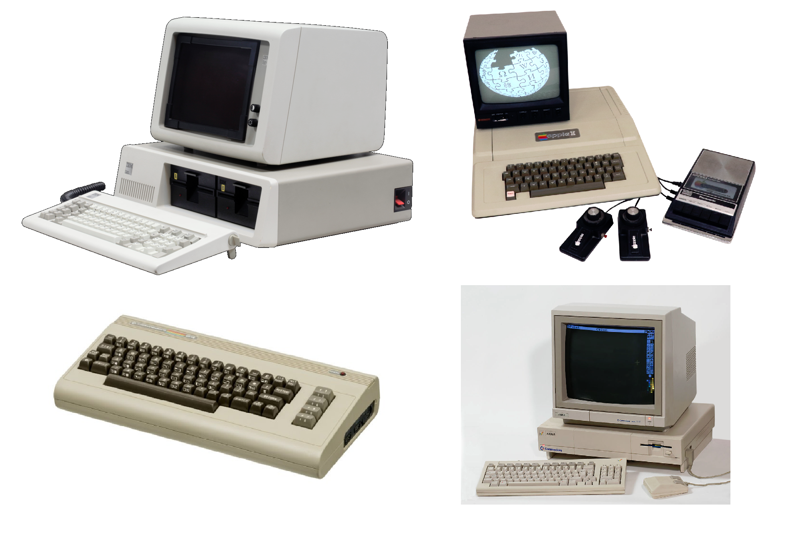
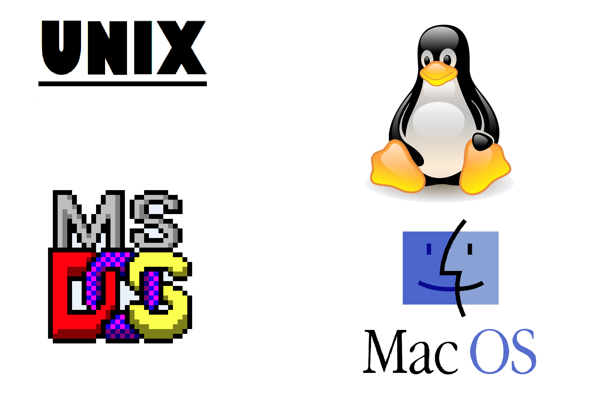

På denna sidan kommer du att kunna läsa om gamla datorer och gamla operativsystem.
Datormodeller
Dessa datorerna är några av de kändaste datorerna från 80-talet.
IBM Personal Computer
IBM släppte denna datorn 1981, den blev en av de mest använda datorerna under 1980-talet.
Apple II
Apple II släpptes 1977 och var Apples första massproducerade dator. Datorn använder sig av 8-bitars processorarkitektur.
Commodore 64
Commodore 64 släpptes 1982 och producerades ända till 1994, och är med i Guinness World Records för mest sålda datorn någonsin. Commodore 64an använde sig av en 8-bitars processorarkitektur och hade 64 KB minne, därav namnet. Commodore 64 hade som många andra datorer under tiden en version av BASIC-programmeringsspråket som gjorde att man lätt både kunde skriva egna program och använda andras program lätt. Till datorn fanns många tillbehör såsom diskettläsare och kassettläsare för lagring av programvara eftersom att datorn bara hade kunde ha saker i minne när den var igång. Det fanns även musar och joystickar som bland annat kunde användas till spel.
Commodore Amiga
Amigan släpptes 1985 och var en hemdator men även en spelkonsol. Datorn använde sig av 32-bitars arkitektur, vilket möjliggjorde för datorn att ha 256 KB ram.
Operativsystem
Unix
Unix är idag mest kännt som en operativsystemsfamilj eftersom att allt ifrån mobiler till serverar använder sig av Linux eller någon av BSDerna som i sig antingen är baserat på Unix eller är Unix-liknande. Men Unix i sig började som ett eget operativsystem.
Linux
Linux är ett Unix-liknande operativsystem först släppt 1991. Linux utväcklades från början av Linus Torvalds och är idag ett av de mest använda operativsystemen på servrar.
MS-DOS
Microsoft Disk Operating System förkortat MS-DOS var ett av de kändaste operativsystem under 80-talet, och var även det som kom installerat på de flesta IBM-datorerna. Den första utgåvan av MS-DOS kom 1981 och den sista kom 2001 som grunden av Microsofts Windows Me.
Classic Mac OS
Classic Mac OS är det operativsystemet som användes på Apples Macdatorer mellan åren 1984 och 2001 då de gick över till det BSD-baserade Mac OS X.
För fortsatt läsning om datorer och dess operativsystem kan du trycka på någon av följade länkar:
Wikipedia-sidan om IBM Personal ComputerWikipedia-sidan om Apple II
Wikipedia-sidan om Commodore 64
Wikipedia-sidan om Amiga
Wikipedia-sidan om Unix
Wikipedia-sidan om Linux
Wikipedia-sidan om MS-DOS
Wikipedia-sidan om Classic Mac OS